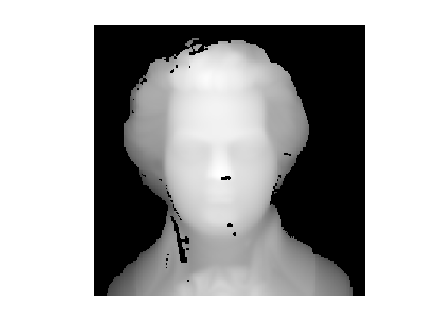
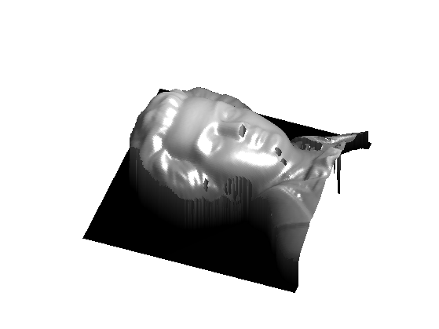
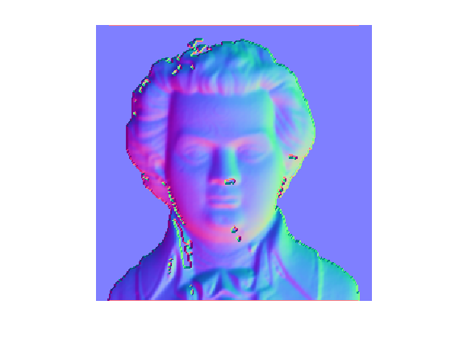
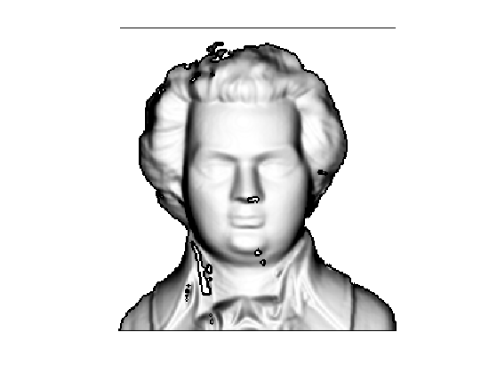
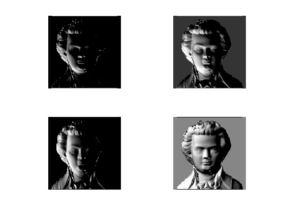
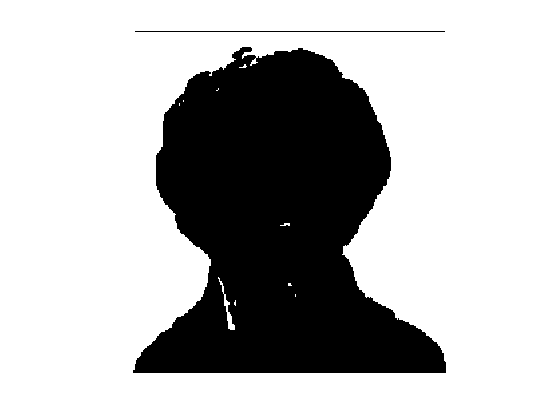
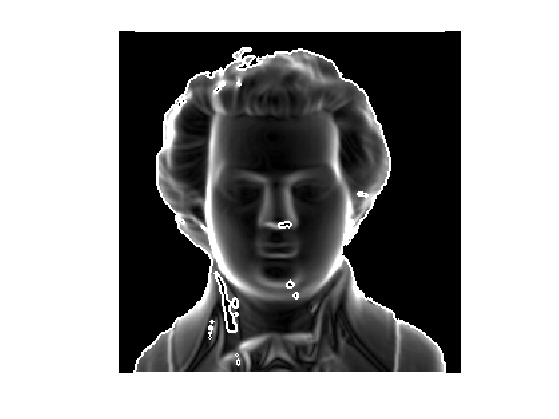
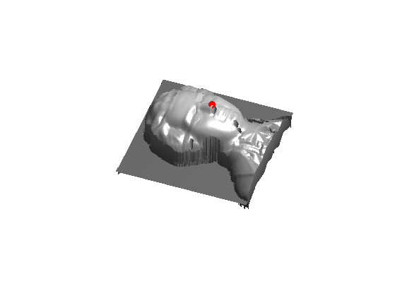
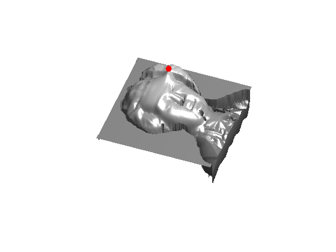

Shape From Shading
This tour explores the resolution of the shape from shading inverse problem using Fast Marching.
Contents
Installing toolboxes and setting up the path.
You need to download the following files: signal toolbox, general toolbox and graph toolbox.
You need to unzip these toolboxes in your working directory, so that you have toolbox_signal, toolbox_general and toolbox_graph in your directory.
For Scilab user: you must replace the Matlab comment '%' by its Scilab counterpart '//'.
Recommandation: You should create a text file named for instance numericaltour.sce (in Scilab) or numericaltour.m (in Matlab) to write all the Scilab/Matlab command you want to execute. Then, simply run exec('numericaltour.sce'); (in Scilab) or numericaltour; (in Matlab) to run the commands.
Execute this line only if you are using Matlab.
getd = @(p)path(p,path); % scilab users must *not* execute this
Then you can add the toolboxes to the path.
getd('toolbox_signal/'); getd('toolbox_general/'); getd('toolbox_graph/');
Forward Image Formation
We consider here a simplified imaging system where the camera performs an orthogonal projection and the lighting is orthogonal to the camera focal plane and is at infinity. We also assume that the surface is perfectly diffuse (Lambertian).
For more information about the shape from shading problem, including more complicated settings, one can read the review paper
Shape From Shading, Emmanuel Prados, Olivier Faugeras Handbook of Mathematical Models in Computer Vision, Springer, page 375-388, 2006.
The shape use in this tour is taken from
Shape from Shading: A Survey, Ruo Zhang, Ping-Sing Tsai, James Edwin, Cryer and Mubarak Shah, IEEE Trans. on PAMI, Vol. 21, No. 8, 1999.
Load a surface as a 2D height field, i.e. it is defined using an image \(f(x,y)\).
name = 'mozart';
f = load_image(name);
n = size(f,1);
Height \(h>0\) of the surface.
h = n*.4;
Final rescale surface \((x,y,f(x,y)) \in \RR^3\).
f = rescale(f,0,h);
Display the image.
clf; imageplot(f);
Display as a 3-D surface.
clf; surf(f); colormap(gray(256)); shading interp; axis equal; view(110,45); axis('off'); camlight;
Compute the normal to the surface \( (x,y,f(x,y)) \). The tangent vectors are \( (1,0,\pd{f}{x}(x,y)) \) and \( (0,1,\pd{f}{y}(x,y)) \) and the normal is thus \[ N(x,y) = \frac{N_0(x,y)}{\norm{N_0(x,y)}} \in \RR^3 \qwhereq N_0(x,y) = \pa{\pd{f}{x}(x,y), \pd{f}{y}(x,y), 1}. \]
Compute \(N_0\), the un-normalized normal, using centered finite differences.
options.order = 2; N0 = cat(3, -grad(f,options), ones(n));
Compute the normalized normal \(N\).
s = sqrt( sum(N0.^2,3) ); N = N0 ./ repmat( s, [1 1 3] );
Display the normal map as a color image.
clf; imageplot(N);
We compute the shaded image obtained by an infinite light coming from a given direction \(d \in \RR^3\).
d = [0 0 1];
We use a Labertian reflectance model to determine the luminance \[ L(x,y) = (\dotp{N(x,y)}{ d })_+ \qwhereq (\al)_+ = \max(\al,0). \]
L = max(0, sum( N .* repmat(reshape(d,[1 1 3]), [n n 1]),3 ) );
Display the lit surface.
vmin = .3; clf; imageplot(max(L,vmin));
Exercice 1: (check the solution) Display the surface with several light directions \(d \in \RR^3\).
exo1;
Eikonal Shape From Shading
For a vertical ligthing direction \(d=(0,0,1)\), the forward imaging operator reads \[ L(x,y) = \frac{1}{ \sqrt{ \norm{ \nabla f(x,y) }^2+1 } }. \]
Compute the luminance map for \(d=(0,0,1)\).
d = [0 0 1]; L = sum( N .* repmat(reshape(d,[1 1 3]), [n n 1]),3 );
The height field \(f\) can thus, in theory, be recovered by solving the following Eikonal equation: \[ \norm{ \nabla f(x,y) } = W(x,y) \qwhereq W(x,y) = \sqrt{ 1/L(x,y)^2 - 1 } \] With additional boundary conditon \[ \forall i \in I, \quad f( p_i) = f_i \] For a set of well chosen grid points \( p_i \in \RR^2 \).
The issue is that this equation is ill-posed (several solution) due to the singular points \( (q_j)_{j \in J} \) where \( L(q_j) \) is close to 1, so that \(W(q_j)\) is close to 0. A way to regularize the inversion is thus to choose the boundary condition points \(p_i\) to be the singular points \(q_j\).
Set a tolerance \(\epsilon>0\).
epsilon = 1e-9;
We show in white the location of singular points \(q_j\), that satisfies \(L(q_j)>1-\epsilon\).
clf; imageplot(L>1-epsilon);
Compute the Eikonal speed \(W\) (right hand side of the equation).
W = sqrt(1./L.^2-1);
To avoid too much ill-posedness, we threshold it.
W = max(W,epsilon);
Display the speed.
clf; imageplot(min(W,3));
We use here a single point \( p \). Select the tip of the nose as base point \(p\).
p = [140;120];
Solve the Eikonal equation, assuming \(f(p)=0\).
[f1,S] = perform_fast_marching(1./W, p);
Rescale the height.
f1 = -f1*n;
Display as a 3D surface.
clf; hold on; surf(f1); h = plot3(p(2), p(1), f1(p(1),p(2)), 'r.'); set(h, 'MarkerSize', 30); colormap(gray(256)); shading interp; axis('equal'); view(110,45); axis('off'); camlight;
Exercice 2: (check the solution) Try to reconstruct the image starting from other base points. What do you observe ?
exo2;
Exercice 3: (check the solution) Try to improve the quality of the reconstruction by selecting several points, and imposing their height.
exo3;